Cripto y dinero, en la práctica
سواد مالی و کریپتو، کاربردیCómo funcionan las blockchains, cómo comprobar un token antes de tocarlo y cómo protegerte de las estafas.
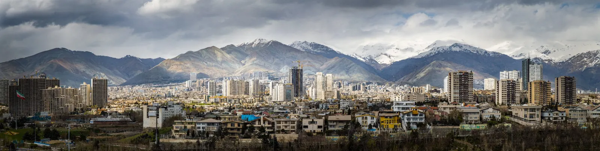
با هم صنعت، شرکتها و فضای کسبوکار ایران را بهتر میشناسیم و رمزارز و فناوری مالی را به زبان ساده یاد میگیریم.
Aprende · Conecta · Evoluciona
Foto:عکس: Amir PashaeiCC BY-SA 4.0


Digital services are 56% of world services exports. Which fields pay, where to find clients, how money can actually be received, and how real it all is.
بازار، ۱۶ حوزه، مشترییابی، اینترنت، تحریمها و راههای دریافت پول؛ و اینکه چقدر واقعی است.
Leer la historia

No wave of AI layoffs so far, but tasks and the way in for newcomers are changing. What this year’s evidence says and how to read the change.
اخراج گستردهای نیست، ولی وظیفهها و راه ورود تازهکارها عوض میشود. شواهد امسال و راه درست فهمیدن تغییر.
Leer la historia

“Treasury hacked” went viral. FinCEN says unauthorized access reached a limited subset of its systems. What is confirmed, what is not, and how to read such headlines.
«خزانهداری هک شد» وایرال شد. FinCEN از دسترسی غیرمجاز به بخش محدودی از سامانههایش میگوید. چه چیزی تأیید شده و چه چیزی نه؟
Leer la historia
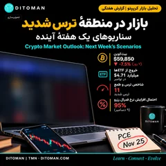
Bitcoin vuelve a estar por debajo de 60.000 dólares, los ETF pierden dinero y el miedo está en 11. Tres escenarios para la semana que viene y el único informe que importa.
بیتکوین دوباره زیر ۶۰ هزار دلار است، ETFها پول از دست میدهند و ترس روی ۱۱ است. سه سناریو برای هفتهی آینده.
Leer la historia

Los fármacos para adelgazar están desviando dinero de los snacks y la pizza hacia la proteína, la ropa y la salud. ¿Cuánto daño hacen, dónde están los nuevos mercados y dónde queda Irán?
داروهای لاغری پول را از چیپس و پیتزا به پروتئین، پوشاک و سلامت میبرند. آسیب چقدر است، بازار تازه کجاست و ایران کجا ایستاده؟
Leer la historia

Circle y Paribu firman un memorando: cómo funciona el dólar digital, la lección de Turquía con un 85% de inflación, dónde está Irán y los empleos que vienen.
تفاهمنامهی Circle و Paribu: سازوکار دلار دیجیتال، درس ترکیه از تورم ۸۵ درصدی، جایگاه ایران و فرصتهای شغلی.
Leer la historia

El andamio óseo de magnesio y óxido de grafeno de la Universidad de Arak: resultados de laboratorio, cómo llegaron Alemania y Corea al mercado, el 5.º puesto de Irán en el campo y el camino al quirófano.
داربست منیزیم و گرافن اکسید دانشگاه اراک: نتایج آزمایشگاهی، تجربهی آلمان و کره، رتبهی پنجم ایران و راه تا اتاق عمل.
Leer la historia

Un El Niño muy fuerte sobre el calentamiento a largo plazo podría hacer de 2027 un año récord. Qué significa para los precios de los alimentos, la electricidad, el agua e Irán.
النینوی بسیار قوی روی گرمایش بلندمدت ممکن است ۲۰۲۷ را سال رکورد کند. اثرش بر قیمت غذا، برق، آب و ایران.
Leer la historia

Rusia, Arabia Saudí y Australia son los mayores exportadores de CO2 de la historia; Irán es el quinto. El dinero, los empleos, la ley y por qué las reglas climáticas actuales apenas lo cuentan.
روسیه، عربستان و استرالیا بزرگترین صادرکنندگان کربن تاریخاند و ایران پنجم. پول، شغل، قانون و اینکه چرا قوانین فعلی تقریباً آن را حساب نمیکنند.
Leer la historia

Cómo funcionan los cheques digitales, la hoja de ruta del banco central hacia un 80% electrónico, lecciones de Hong Kong, Singapur, India y Reino Unido, y cómo usarlos con seguridad.
چک دیجیتال چطور کار میکند، نقشهی راه بانک مرکزی تا سهم ۸۰ درصدی، تجربهی هنگکنگ، سنگاپور، هند و بریتانیا و راهنمای استفادهی امن.
Leer la historia

De la primera central de 6,6 kW de Mashhad a 396 TWh al año: historia, capacidad, red, sanciones, medio ambiente, futuro y 40 años comparados con 15 vecinos.
از نیروگاه ۶٫۶ کیلوواتی مشهد تا ۳۹۶ میلیارد کیلوواتساعت: تاریخچه، ظرفیت، شبکه، تحریم، محیط زیست، آینده و مقایسه با ۱۵ همسایه.
Leer la historia

Una herramienta de pruebas de seguridad usada en ataques reales a bancos surcoreanos: lo que confirmaron el FBI, CrowdStrike y Check Point, lo que aún no está probado y qué hacer.
ابزار آزمایش امنیت که در حملهی واقعی به بانکهای کره به کار رفت: آنچه FBI و CrowdStrike تأیید کردهاند، آنچه هنوز ثابت نشده و چه باید کرد.
Leer la historia

Un país que importa el 95% de su gas planea barcos-central, GNL y un corredor eléctrico. Las cifras, quién gana, a quién le preocupa y qué falta por demostrar.
کشوری که ۹۵٪ گازش وارداتی است، با نیروگاه شناور، LNG و کریدور برق میخواهد هاب شود. ارقام، برندگان، نگرانیها و آنچه هنوز ثابت نشده.
Leer la historia

China hace 40 años, hace 20 y hoy: 3,4 billones de dólares invertidos fuera, 168 puertos en 90 países, préstamos, capacidades y la comparación con Reino Unido, Francia, EE. UU. y Japón.
چین ۴۰ سال پیش، ۲۰ سال پیش و امروز: ۳٫۴ تریلیون دلار سرمایهگذاری خارجی، ۱۶۸ بندر در ۹۰ کشور، وام، مهارت و مقایسه با بریتانیا، فرانسه، آمریکا و ژاپن.
Leer la historia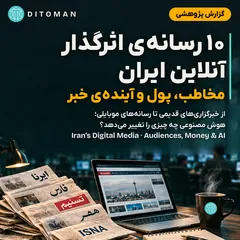

Diez grandes medios digitales iraníes comparados: historia, dinero, audiencia, la red nacional durante el apagón, IA y lectores en el extranjero.
ده رسانه از نُه زاویه: تاریخچه، پول، مخاطب، شبکهی ملی در روزهای قطع اینترنت، هوش مصنوعی و خوانندهی خارج از ایران.
Leer la historia

Por qué las cripto cayeron con las tecnológicas y el oro: la Fed, las acciones de IA, las salidas de ETF y la geopolítica, con escenarios a una semana, cuatro semanas y seis meses.
چرا کریپتو همزمان با سهام فناوری و طلا ریخت؛ با سناریوهای مثبت و منفی برای یک هفته، چهار هفته و شش ماه.
Leer la historia

Daniel Chidiac sobre pensar demasiado, los límites y el autosabotaje, y por qué un espacio entre el hecho y la reacción importa en las decisiones de dinero.
کتاب دنیل چیدیاک دربارهی بیشفکری، مرزبندی و خودتخریبی؛ و اینکه چرا فاصلهی بین اتفاق و واکنش در پول هم مهم است.
Leer la historia

El libro de 2016 de Peter Zeihan sobre el esquisto y un mundo sin Estados Unidos como policía, con un balance de sus pronósticos.
کتاب پیتر زایهان دربارهی انقلاب شیل و جهانی بدون پلیس آمریکا، با کارنامهی پیشبینیهایش تا امروز.
Leer la historia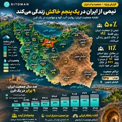
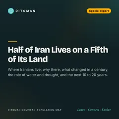
Dónde viven los iraníes y por qué: un siglo del mapa de población, agua, infraestructura y los próximos 20 años.
مردم ایران کجا زندگی میکنند و چرا: صد سال نقشهی جمعیت، نقش آب، زیرساختها و ۲۰ سال آینده.
Leer la historia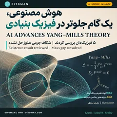

Un panel liderado por un Nobel respalda la prueba de existencia de Yang-Mills de OpenAI; la brecha de masa y el premio de 1 millón de dólares siguen abiertos.
تأیید اثبات هوش مصنوعی برای وجود نظریهی یانگ–میلز؛ شکاف جرمی و جایزهی یک میلیون دلاری هنوز باز است.
Leer la historia

El acuerdo geotérmico supercaliente Google–Quaise, un siglo de historia, países líderes, el mercado y el potencial de Irán.
قرارداد گوگل و Quaise، فناوری زمینگرمایی فوقداغ، تاریخچه، بازار و ظرفیت ایران از مشکینشهر تا دماوند.
Leer la historia
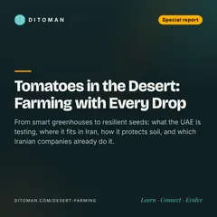
Lo que prueban los Emiratos, dónde encaja en Irán, cómo protege el suelo y qué empresas iraníes ya lo hacen.
آزمایشهای امارات، کاربرد در مناطق خشک ایران، حفاظت از خاک و شرکتهای ایرانی فعال در کشت هوشمند.
Leer la historia

Micron, SK hynix, AMD, Arista y Marvell: cifras oficiales, accionariado, la salida de Jensen Huang y escenarios hasta 2030.
مایکرون، اسکی هاینیکس، AMD، آریستا و مارول: ارقام رسمی به دلار و تومان، مالکیت، کنارهگیری جنسن هوانگ و سناریوها.
Leer la historia

Industria frente a mercados: usos, el déficit, el récord y el desplome de 2026, el oro y otros metales, y las perspectivas.
صنعت در برابر بازار: کاربردها، کسری بازار، رکورد و سقوط ۲۰۲۶، مقایسه با طلا و چشمانداز آینده.
Leer la historia
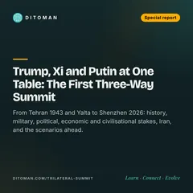
De Teherán 1943 y Yalta a Shenzhen: historia, lo nuclear, lo que está en juego en política, economía y civilización, Irán y los escenarios que vienen.
از تهران ۱۹۴۳ و یالتا تا شنژن: تاریخ، ابعاد هستهای، سیاسی، اقتصادی و تمدنی، جایگاه ایران و سناریوهای پیش رو.
Leer la historia

Cómo se fabrica el polvo de oro, las máquinas y sus precios, la economía de la joyería en Irán y la idea de un oro rediseñable.
پودر طلا چطور ساخته میشود، دستگاهها و قیمتها، اقتصاد جواهر در ایران و ایدهی طلای قابلبازطراحی.
Leer la historia

Impresoras 3D +86%, baterías +30%, robots +26%, mientras las ventas minoristas crecieron solo un 0,4%: lo que significa para el mundo e Irán.
چاپگر سهبعدی ۸۶٪، باتری ۳۰٪، ربات ۲۶٪؛ در حالی که خردهفروشی فقط ۰٫۴٪ رشد کرد.
Leer la historia
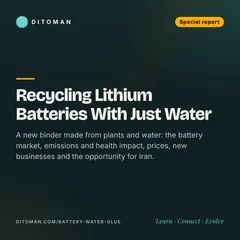
Un aglutinante de baterías hecho de plantas y agua: el mercado, las emisiones, la salud, los precios, nuevos negocios y la oportunidad para Irán.
چسب باتری از گیاه و آب: بازار، گازهای گلخانهای، سلامت، قیمت، کسبوکارهای تازه و فرصت ایران.
Leer la historia

Espejos en órbita, las cuentas energéticas, el uso del suelo, la alarma de los astrónomos y cuatro escenarios de futuro.
آینههای فضایی، حساب انرژی، کاربری زمین، نگرانی اخترشناسان و چهار سناریو برای آینده.
Leer la historia

Qué pasó, a quién afectó, por qué la recuperación tardó tanto, alertas de estafa y cómo pueden las empresas estar menos expuestas.
چه اتفاقی افتاد، چه کسانی آسیب دیدند، چرا بازیابی طول کشید، هشدار کلاهبرداری و درسها برای کسبوکارها.
Leer la historia

Auracast en Fráncfort, Múnich y Brighton, el mercado global, la IA, las empresas, los estándares y la oportunidad para Irán.
Auracast در فرانکفورت، مونیخ و برایتون، بازار جهانی، هوش مصنوعی، شرکتها، استانداردها و فرصت صنعت صوت ایران.
Leer la historia

Liquidaciones, apalancamiento, cinco causas, una comparación de un año, tres escenarios y lo que significa para los inversores iraníes.
لیکوئیدیشن و اهرم، پنج دلیل سقوط، مقایسه با یک سال پیش، سه سناریوی آینده و اثر بر سرمایهگذار ایرانی.
Leer la historia
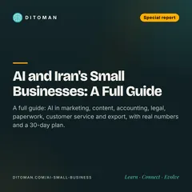
Cómo la IA abarata montar una pequeña empresa en Irán: marketing, contenidos, contabilidad, temas legales, papeleo, atención al cliente y exportación, con un plan de 30 días.
هوش مصنوعی در بازاریابی، محتوا، حسابداری، امور حقوقی، مدارک، خدمات مشتری و صادرات؛ با حسابوکتاب واقعی و برنامهی ۳۰ روزه.
Leer la historia

21 bancos globales comprometen unos 270 millones de dólares en el Proyecto Faro: la historia, el mercado de 295.000 millones, fintech, blockchain y lo que significa para Irán.
۲۱ بانک بزرگ جهان با حدود ۲۷۰ میلیون دلار وارد بازار استیبلکوین شدند: تاریخچه، بازار ۲۹۵ میلیارد دلاری، فینتک، بلاکچین و معنای آن برای ایران.
Leer la historia

United prohibió a los agentes de IA comprar billetes: las razones oficiales, el «ningún nuevo intermediario» del CEO, el dinero de una industria de 1,165 billones de dólares y lo que significa para Irán.
یونایتد خرید بلیت با هوش مصنوعی را ممنوع کرد: دلایل رسمی، «واسطهی تازه نمیخواهم»، اعداد صنعت ۱٫۱۶۵ تریلیون دلاری و فرصتها برای ایران.
Leer la historia

Europa concentra la mitad del gasto social del mundo y su deuda sube: quién paga, por qué Europa no es una sola historia y las oportunidades que abre para la región.
اروپا نیمی از هزینهی اجتماعی جهان را خرج میکند: چه کسی میپردازد، چرا همهی اروپا یکی نیست و چه فرصتهایی برای منطقه ساخته میشود.
Leer la historia
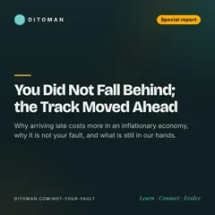
Inflación de dos dígitos en 46 de 50 años: por qué quien empieza tarde queda más atrás, por qué no es culpa suya y qué sigue en nuestras manos.
تورم دو رقمی در ۴۶ سال از ۵۰ سال: چرا دیر رسیدن گران است، چرا تقصیر تو نیست و چه چیزی هنوز در اختیار ماست.
Leer la historia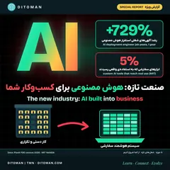

En qué convierte la IA cada cosa en cinco ámbitos, por qué los constructores de sistemas de IA se están convirtiendo en una industria y por dónde puede empezar un empresario.
هوش مصنوعی در پنج حوزه چه چیزی را به چه تبدیل میکند و یک تاجر یا کارخانهدار ایرانی از کجا شروع کند.
Leer la historia

El CO₂ fósil bajará un 0,4% en 2026 mientras la solar y la eólica alcanzan el 17,3% de la electricidad mundial. Treinta años de datos y 3,4 billones de dólares de inversión.
انتشار کربن فسیلی در ۲۰۲۶ کم میشود و خورشید و باد به ۱۷٫۳٪ برق جهان رسیدهاند؛ سی سال داده و ۳٫۴ تریلیون دلار سرمایهگذاری.
Leer la historia

Los adultos compran hoy uno de cada cinco juguetes. Cincuenta años de juguetes, por qué los niños aún los quieren y la oportunidad de Irán de ser un centro regional del juguete.
بزرگسالها حالا یکپنجم خریداران اسباببازیاند؛ ۵۰ سال تاریخ اسباببازی و فرصت ایران در بازار منطقه.
Leer la historia

Susa, Rey y Hamadán están entre diez ciudades antiguas que siguieron habitadas y conservaron su nombre, y unen a Irán con Siria y Líbano.
شوش، ری و همدان در میان ده شهر کهنیاند که هزاران سال مسکونی ماندهاند و نامشان را نگه داشتهاند.
Leer la historia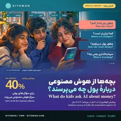

El 40% de los niños del Reino Unido recurre a la IA para consejos sobre dinero: qué preguntan, qué tan precisas son las respuestas y dónde están Irán y sus vecinos.
۴۰٪ بچههای بریتانیایی سؤال پولی را از هوش مصنوعی میپرسند: چه میپرسند، جوابها چقدر درست است و ایران و همسایهها کجا هستند.
Leer la historia

Economía significaba antes llevar una casa: cómo viven de verdad la economía las familias, el presupuesto del hogar iraní en cifras y las habilidades que usan para salir adelante.
اقتصاد از اول یعنی ادارهی خانه: دخل و خرج خانوار ایرانی با عدد و مهارتهایی که خانوادهها با آن از پس زندگی برمیآیند.
Leer la historia

8.112 especies de plantas, un siglo de cambio, la economía de los árboles y las plantas, Irán junto a sus vecinos y 21 empresas.
۸٬۱۱۲ گونهی گیاهی، صد سال تغییر، اقتصاد درخت و گیاه، مقایسه با همسایهها و ۲۱ شرکت.
Leer la historia
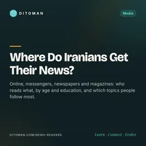
El 65% de los jóvenes de 18 a 29 años se informa primero en internet, el 2,5% lee a menudo prensa en papel, y la economía es la sección más leída.
۶۵٪ جوانها خبر را اول آنلاین میگیرند، ۲٫۵٪ اغلب روزنامهی کاغذی میخوانند و اقتصاد پرخوانندهترین صفحه است.
Leer la historia
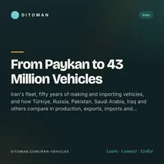
El parque de vehículos de Irán, cincuenta años de fabricación e importación, y cómo se compara con Turquía, Rusia, Pakistán, Arabia Saudí e Irak.
ناوگان ایران، ۵۰ سال تولید و واردات، و مقایسه با ترکیه، روسیه، پاکستان، عربستان و عراق.
Leer la historia

Un reactor de polimerización de 40 metros construido en Shiraz para un complejo petroquímico en Asaluyeh, y las empresas detrás.
راکتور پلیمریزاسیون ۴۰ متری ساخت شیراز برای عسلویه، و شرکتهایی که پشت آناند.
Leer la historia

Cincuenta años de construcción en cifras: casi seis veces más viviendas, 52.000 unidades industriales, sexto del mundo en cemento.
۵۰ سال ساختن با عدد: خانهها نزدیک ۶ برابر، ۵۲ هزار واحد صنعتی، ششمِ جهان در سیمان.
Leer la historia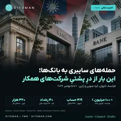

Francia, Taiwán, Corea del Sur y Japón: qué está confirmado, qué no y por qué los terceros son el eslabón débil.
فرانسه، تایوان، کره و ژاپن: چه تأیید شده، چه نه، و چرا شرکتهای همکار حلقهی ضعیفاند.
Leer la historia

Un banco digital con 2,9 millones de clientes fue intervenido, el presidente destituido, y lo que realmente cubren las garantías de depósitos.
بانکی با ۲٫۹ میلیون مشتری بسته شد و رئیسجمهور برکنار شد؛ ضمانت سپرده واقعاً چه چیزی را پوشش میدهد؟
Leer la historia

Quién compite, por qué lo cuántico se equipara a la IA y la energía nuclear, y qué significa para el cifrado y Bitcoin.
چه کشورهایی در این مسابقهاند و چه اثری بر رمزنگاری و بیتکوین دارد.
Leer la historia
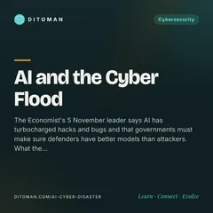
The Economist dice que la IA ha disparado los hackeos. Las pruebas, las advertencias y lo que deben hacer los defensores.
شواهد، هشدارها و کاری که مدافعان باید بکنند.
Leer la historia

Bitcoin, Ether y USDT para minoristas solo a través de intermediarios con licencia, con un tope de 300.000 rublos.
سه رمزارز برای مردم عادی، فقط از راه واسطههای مجاز و با سقف سالانه.
Leer la historia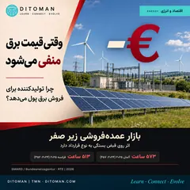

Por qué los productores a veces pagan por vender electricidad, y por qué tu factura no se vuelve negativa.
چرا تولیدکننده برای فروش برق پول میدهد و چرا قبض تو منفی نمیشود.
Leer la historia

Un fraude de 129 millones de dólares supuestamente con voces y caras clonadas, y tres reglas para protegerte.
پروندهی ۱۲۹ میلیون دلاری با جعل صدا و تصویر، و سه قانون ساده برای محافظت.
Leer la historia

Un robot quirúrgico iraní: qué está documentado y qué sigue siendo afirmación del fabricante.
از دانشگاه تا اتاق عمل؛ آنچه مستند است و آنچه هنوز ادعای سازنده است.
Leer la historia

Un sistema iraní de clasificación con IA se encuentra con un comercio de exportación centenario.
سامانهی هوشمند غربالگری آفلاتوکسین و جایگاه پستهی ایران در جهان.
Leer la historia

Salir se encareció un 20% más que la inflación, y aun así también bajaron las quedadas gratuitas.
گرانی تنها مقصر نیست؛ حتی دورهمی رایگان هم کم شد.
Leer la historia
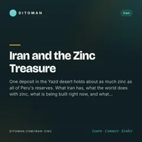
Un solo yacimiento en Yazd tiene casi tanto zinc como todas las reservas de Perú.
ذخیرهای در دل کویر یزد، هماندازهی ذخایر روی کشور پرو.
Leer la historia

Un catalizador de EO fabricado en Irán hace funcionar ya la unidad de glicol de Morvarid Petrochemical a plena capacidad.
کاتالیست ایرانی EO، واحد گلایکول پتروشیمی مروارید را با ظرفیت کامل میچرخاند.
Leer la historia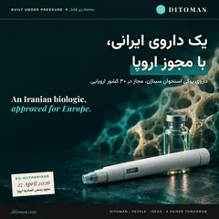

Cómo CinnaGen obtuvo la autorización de comercialización de la UE para Zandoriah.
داستان مجوز اروپایی داروی زاندوریا، ساخت سیناژن.
Leer la historia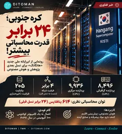

Qué puede hacer, quién puede usarlo y qué pueden aprender de ello los iraníes.
چه میکند، چه کسانی از آن استفاده میکنند و چه درسی برای ما دارد.
Leer la historia۳۰ درس کوتاه و دوزبانه، قدمبهقدم: از پول و تورم تا بانک، بلاکچین و هوش مصنوعی.30 lecciones breves, paso a paso: del dinero y la inflación a los bancos, la blockchain y la IA.
Una regla editorial permanente en los tres: conocimiento real y logros reales, sin comentario político de ningún lado.
Cómo funcionan las blockchains, cómo comprobar un token antes de tocarlo y cómo protegerte de las estafas.
Análisis honesto de los cambios que vienen, leídos desde donde realmente está nuestro público.
Documentar lo que han construido personas y empresas iraníes, con una fuente para cada cifra.
Un mapa estructurado de lo que se fabrica, extrae, transporta y ve en Irán: seis ramas, sus subramas oficiales, las empresas líderes y una fuente para cada cifra.

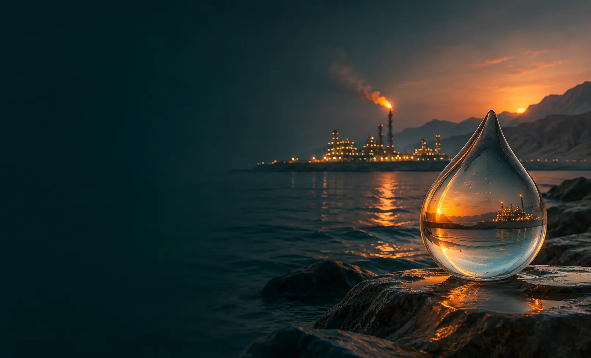


Historia, productos, dirección y cifras, sector por sector, con una fuente para cada número.
Tienda de apps Android para hablantes de persa; más de 500.000 apps
فروشگاه برنامهی اندروید برای فارسیزبانان؛ بیش از ۵۰۰ هزار برنامه
Ver el registroMedicamentos biosimilares, reactivos de laboratorio y proteínas recombinantes
داروهای زیستیمشابه، معرفهای آزمایشگاهی و پروتئینهای نوترکیب
Ver el registroComercio electrónico iraní; desde 2006
بزرگترین فروشگاه اینترنتی ایران؛ از ۲۰۰۶
Ver el registroDiseño de ASIC, SoC y FPGA; el microprocesador Aristo de 32 bits
طراحی تراشهی ASIC، SoC و FPGA؛ ریزپردازندهی ۳۲ بیتی آریستو
Ver el registroSistema quirúrgico robótico Sina
سامانهی جراحی رباتیک سینا
Ver el registroTransporte con conductor a precio fijo; lanzado en febrero de 2014
درخواست خودرو؛ قیمت از پیش مشخص؛ آغاز فوریهی ۲۰۱۴
Ver el registroPapel kraft y semikraft, cartón ondulado y cajas, cartón; polígono industrial de Yazd
کاغذ کرافت و سمیکرافت، ورق و کارتن کنگرهای، مقوا؛ شهرک صنعتی یزد
Ver el registro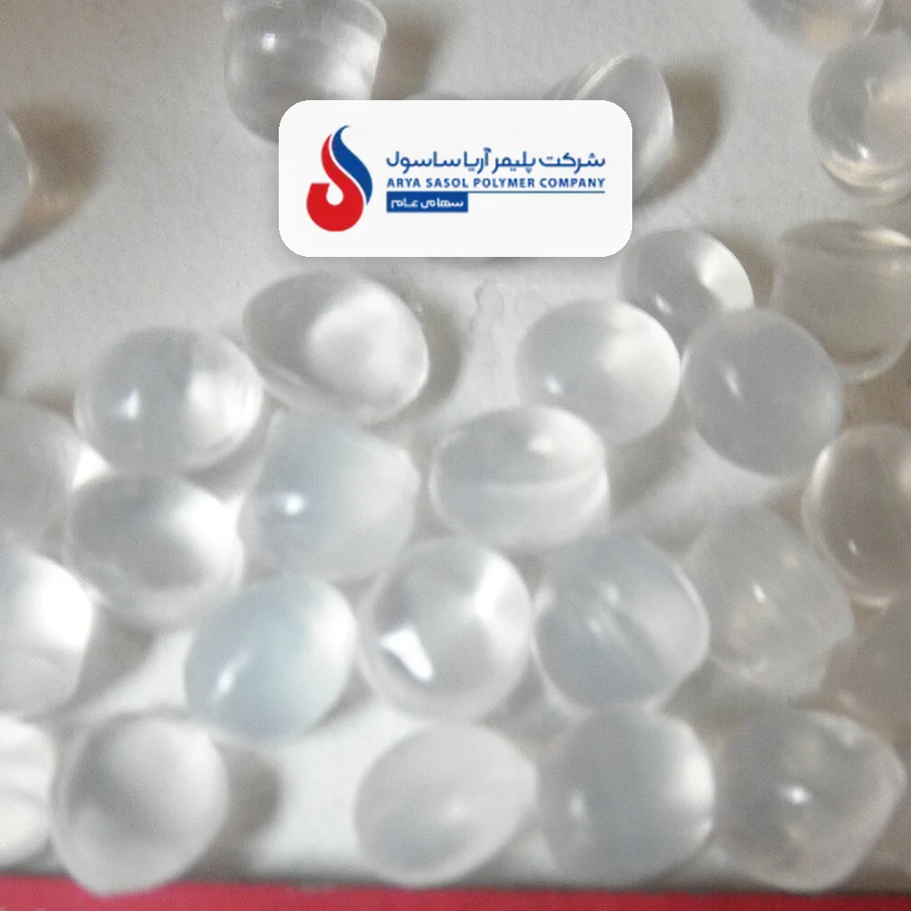
Uno de los mayores productores de etileno y polietileno de Irán, en Asaluyeh, que exporta más del 70% de su producción
یکی از بزرگترین تولیدکنندگان اتیلن و پلیاتیلن ایران در عسلویه؛ بیش از ۷۰٪ محصول برای صادرات
Ver el registroTableros y perfiles de MDF recubierto, paneles de pared de PVC, piedra artificial, placas de techo; Zona Franca de Anzali, Guilán
ورق و پروفیل امدیاف روکشدار، دیوارپوش پیویسی، سنگ مصنوعی و تایل سقفی؛ منطقه آزاد انزلی، گیلان
Ver el registroMedicamentos a base de plantas, cosmética, alimentos y aceites esenciales; Kashan, Isfahán (planta cerca de Qamsar)
داروی گیاهی، آرایشی و غذایی بر پایهی گیاهان دارویی؛ اسانس؛ کاشان، اصفهان (کارخانه نزدیک قمصر)
Ver el registroPasta y papel; Guilán
خمیر کاغذ و کاغذ؛ گیلان
Ver el registroAgua de rosas, destilados de hierbas, jarabes naturales y hierbas secas; Ciudad Industrial Amirkabir 1, Kashan
گلاب، عرقیات گیاهی، شربت طبیعی و گیاهان دارویی خشک؛ شهرک صنعتی امیرکبیر ۱، کاشان
Ver el registro«بیسوادان قرن بیستویکم کسانی نیستند که نمیتوانند بخوانند؛ کسانیاند که نمیتوانند یاد بگیرند، از یاد ببرند و دوباره یاد بگیرند.»
«Los analfabetos del siglo XXI no serán los que no sepan leer y escribir, sino los que no sepan aprender, desaprender y reaprender.»
Ditoman toma su nombre del tomán, el nombre cotidiano del dinero iraní: un «tomán digital». TMN se desplegó en BNB Smart Chain en febrero de 2022 con una pregunta detrás: ¿puede el propio conocimiento tener valor real?
Durante casi cuatro años guardamos silencio a propósito. Sin marketing, sin venta de tokens, sin lanzamiento. Esa historia está en la cadena para quien quiera comprobarla, y es la señal más clara de que esto nunca se hizo para una subida rápida.
Lecciones cortas por tema, de unos cinco minutos cada una, en ambos idiomas, y cada una termina con un cuestionario.


Monedas digitales de bancos centrales y dinero programable: qué es real, qué es exagerado y dónde está el rial digital de Irán.
Leer la lecciónLecciones, noticias explicadas en breve y actualizaciones, en persa e inglés. Sin señales, sin humo.
TMN es el token BEP-20 detrás de Ditoman, pensado para reconocer el aprendizaje y la contribución reales. No es un producto de inversión y no pedimos a nadie que lo compre.
Varios tokens sin relación usan el ticker TMN. Este es el único contrato oficial:
0x86a56e59f22Eaf3867EEeB41fB9BfA81BacE790d
نقطهضعفها را هم مینویسیم، چون درس بررسی توکن یاد میدهد دنبالشان بگردی.
Fases, no fechas. Informamos del progreso con honestidad, incluido lo que no funcionó.
Contrato verificado, propiedad renunciada, alrededor del 20% de la oferta fuera de circulación, lecciones bilingües publicadas, libro blanco definitivo.
Una comunidad de Telegram con reglas reales, lecciones iniciales y una entrada clara, antes de cualquier invitación.
29 oct 2026: toda la liquidez TMN/BNB de la billetera principal del proyecto bloqueada hasta el 29 oct 2027. Verificar el bloqueo · Qué significa
۷ آبان ۱۴۰۵: همهی لیکوئیدیتی TMN/BNB کیفپول اصلی پروژه تا ۷ آبان ۱۴۰۶ قفل شد.
Entrada en comunidades cripto y de la diáspora en persa, y la primera retirada pública de oferta con prueba.
Lee diez lecciones, aprueba un test de diez preguntas y recibe 500.000 TMN, para las primeras 1.000 personas. Empieza aquí.
ده درس را بخوان، در آزمون دهسؤالی قبول شو و ۵۰۰٬۰۰۰ TMN بگیر؛ برای ۱٬۰۰۰ نفر اول. از اینجا شروع کن.
Un proyecto educativo bilingüe con tres pilares: alfabetización práctica en cripto y finanzas, análisis honesto de la IA, la energía y el futuro del trabajo, y cobertura de logros reales de personas y empresas iraníes.
از کسی نمیخواهیم بخرد. عرضهی TMN متمرکز است. صفحهی TMN را بخوان و با همان معیارهایی بسنجش که هر توکن دیگری را میسنجی.
No. Ditoman es un proyecto educativo. Nada de lo que hay aquí es asesoramiento de inversión, y las lecciones están pensadas para ayudarte a decidir por ti mismo.
Es una regla editorial permanente. Documentamos conocimiento real y logros reales, y nos mantenemos fuera del comentario político de cualquier lado.
Sí. El piloto «aprende y gana» está abierto: lee diez lecciones, aprueba un test de diez preguntas y recibe 500.000 TMN, para las primeras 1.000 personas. Empieza aquí.
بله. طرح «یاد بگیر، توکن بگیر» باز است: ده درس را بخوان، در آزمون دهسؤالی قبول شو و ۵۰۰٬۰۰۰ TMN بگیر؛ برای ۱٬۰۰۰ نفر اول. از اینجا شروع کن.
Un documento marca el rumbo. Léelo antes de fiarte de nada de lo que decimos.
گزارشها، آموزشها و روایتهای امیدبخش، هر روز در کانالهای دیتومان.